1~30화 공개
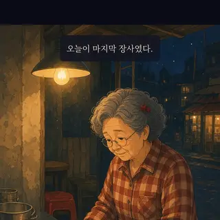
2화마지막 떡볶이보기 ›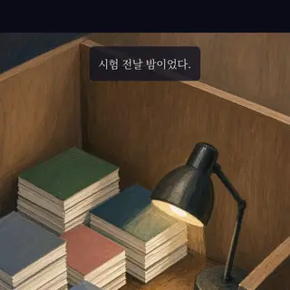
3화오답노트보기 ›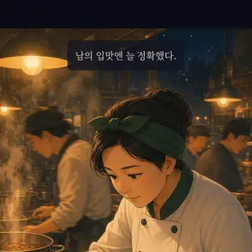
4화간을 맞추다보기 ›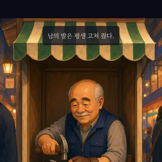
6화구두 한 켤레보기 ›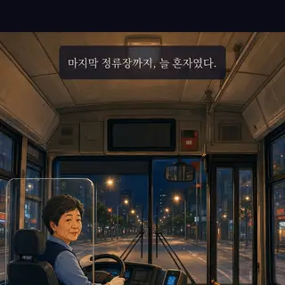
7화막차보기 ›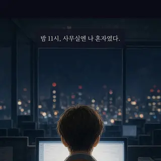
8화임시보관함보기 ›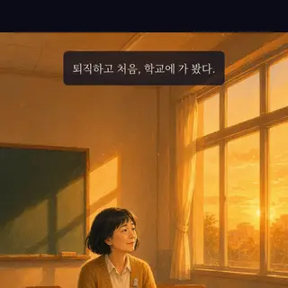
9화빈 교실보기 ›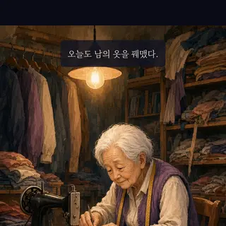
10화서랍보기 ›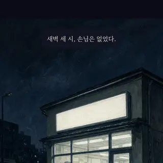
11화편의점 야간보기 ›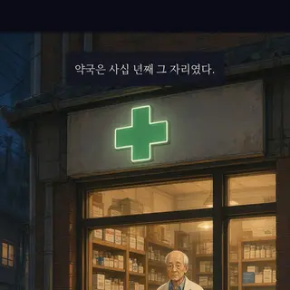
16화작은 약국보기 ›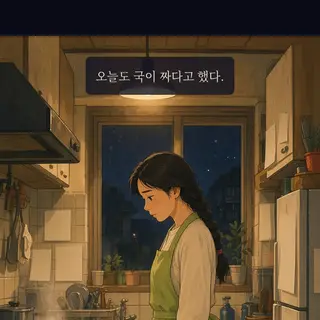
17화두 나라 밥상보기 ›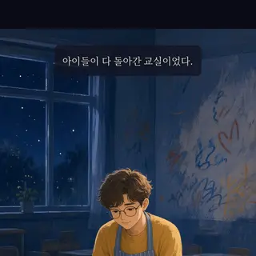
19화그림책보기 ›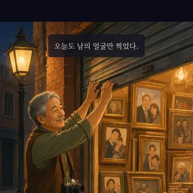
20화반쪽 사진보기 ›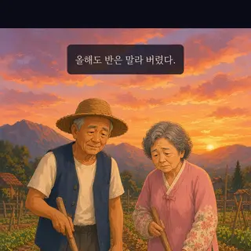
23화텃밭보기 ›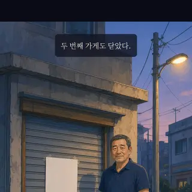
24화두 번째 개업보기 ›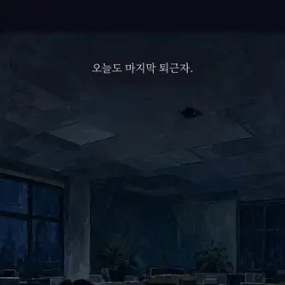
26화밤샘 코드보기 ›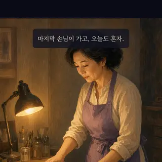
27화손끝보기 ›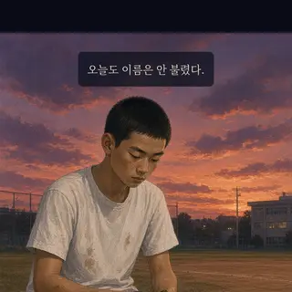
28화뒷마당 야구보기 ›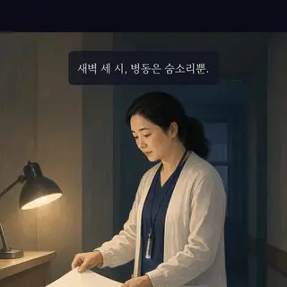
30화간호 일지보기 ›